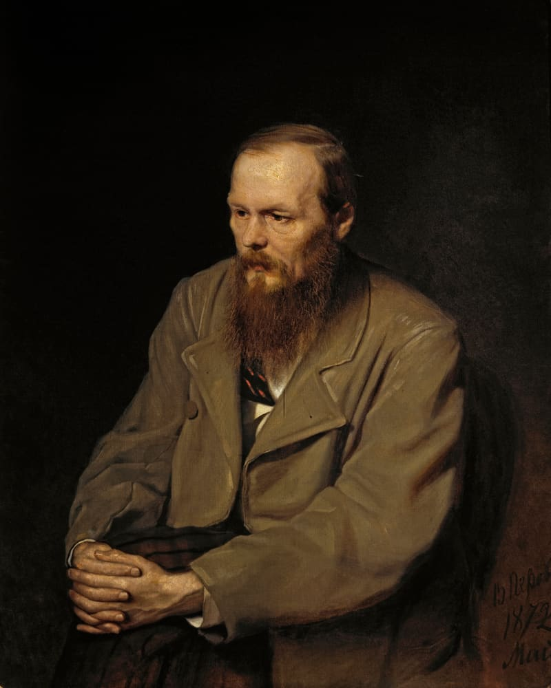

Песочница движка · стандарт №12 · не страница музея
Достоевский у Перова — до мазка
Разведите пальцы на картине или покрутите колесо: видны мазки на руках и на сюртуке.

Тайлы — IIIF Image API 3, уровень 0, статические файлы (tools/iiif-tiles.mjs), библиотека — OpenSeadragon 6.1.1 (BSD-3). Движок: assets/museum-deep-zoom.js, разметка — атрибут data-deep-zoom.